Language
- Java객체지향 설계를 기반으로 비즈니스 로직과 도메인 모델을 구현했습니다.
- Python데이터 전처리 및 반복 작업 자동화를 위한 스크립트를 작성했습니다.
Spring 기반 API, 인증/인가, 실시간 통신, 쿼리 튜닝을 중심으로 안정적인 서비스 흐름을 설계해왔습니다.
문제는 측정으로 확인하고, 결정 근거와 트러블슈팅 과정을 기록해 왜 그렇게 만들었는지 설명할 수 있는 개발자를 지향합니다.
Projects
최신순으로 진행한 주요 프로젝트와 담당 역할을 정리했습니다.
최대 100명 동시 참여 실시간 멀티플레이 미니게임 플랫폼
YouTube 시청 취향 기반 AI 여행 도시 추천 서비스
AI 기반 기술 면접 연습 및 포트폴리오 분석 서비스
지도 기반 부동산 매물 · 감정 스티커 커뮤니티
최대 100명이 동시에 접속해 매 라운드 다른 미니게임을 플레이하고, 누적 점수로 최종 우승자를 가리는 실시간 파티 게임 플랫폼입니다.
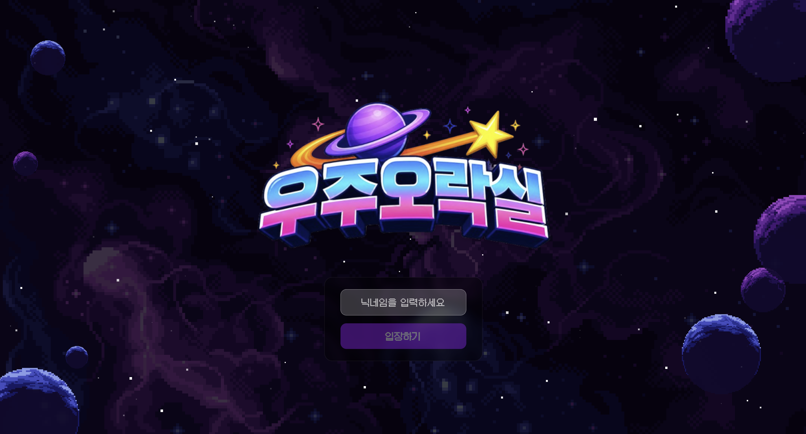
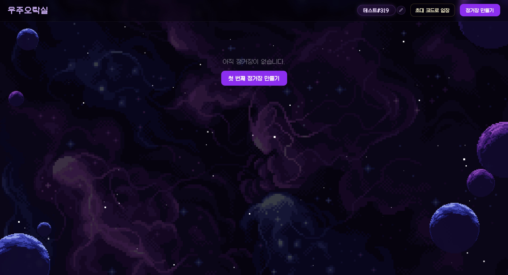
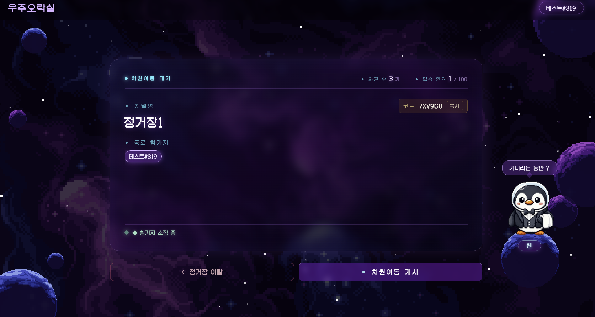
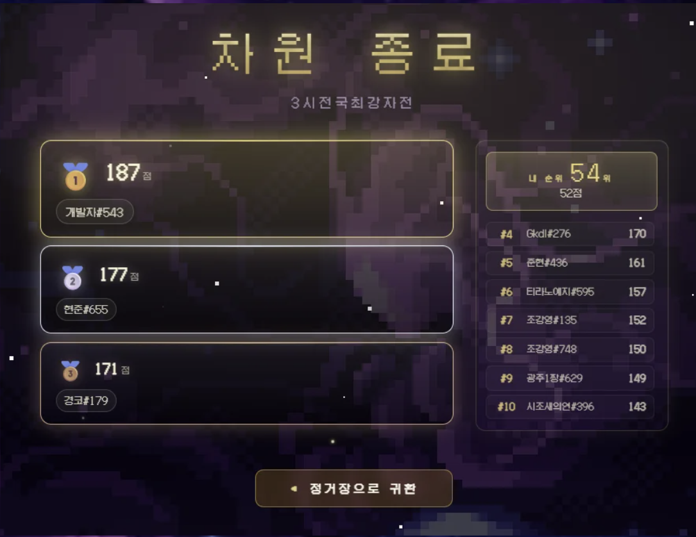
CS 면접과 포트폴리오 면접을 반복 연습하고, 답변 분석 결과와 피드백, 꼬리질문을 통해 면접 과정을 복기할 수 있는 AI 면접 분석 플랫폼입니다.

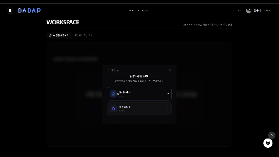
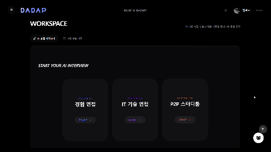
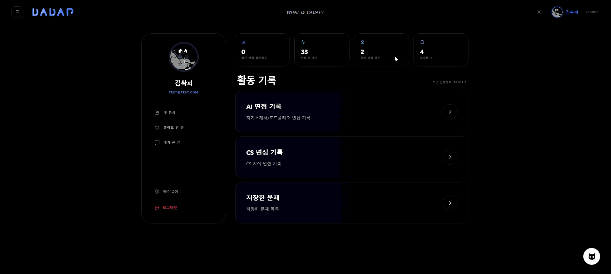
지도 위 감정 이모지 스티커로 동네 분위기를 공유하고, 실거래가 차트와 AI 리뷰 요약으로 매물 선택을 돕는 부동산 커뮤니티 플랫폼입니다.
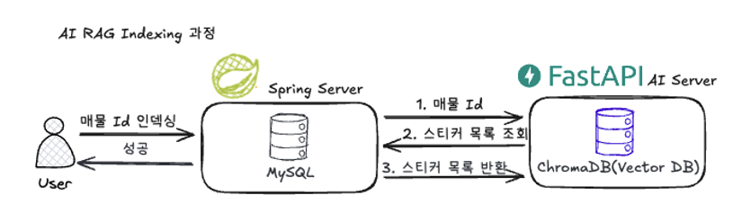
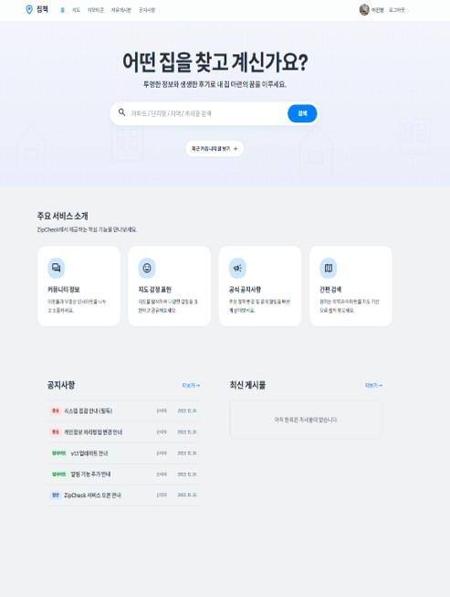
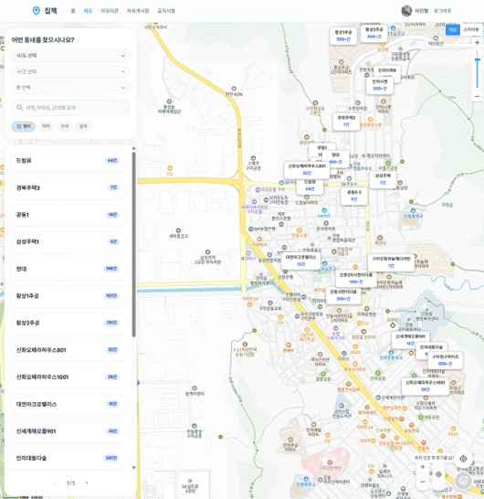
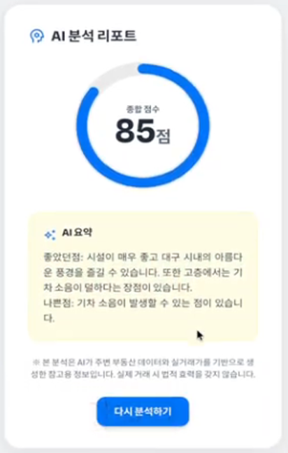
대표 프로젝트 외에 학습·경험 차원에서 진행한 프로젝트입니다.
YouTube 시청 취향을 분석해 여행 도시를 추천하고, 추천 근거까지 함께 제공하는 AI 여행 추천 서비스입니다.
담당 역할지도에 없는 장소 정보를 사용자가 직접 등록·공유하는 위치 정보 공유 지도 서비스로, 학부 졸업 프로젝트로 진행했습니다.
담당 역할